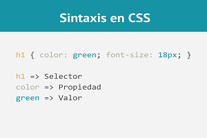

Los selectores CSS son una parte fundamental del lenguaje de estilos en cascada (CSS), ya que permiten seleccionar elementos HTML específicos y aplicarles estilos visuales. Los selectores CSS permiten seleccionar elementos HTML por su etiqueta, clase, identificador, atributos, ubicación en la jerarquía del documento o incluso por el contenido del elemento.

A continuación, te explico brevemente algunos tipos de selectores CSS comunes:
Selector de etiqueta: selecciona todos los elementos con una etiqueta HTML específica. Por ejemplo, el selector "p" selecciona todos los párrafos del documento.
Selector de clase: selecciona todos los elementos que tengan un atributo de clase específico. Se utiliza el símbolo "." seguido del nombre de la clase. Por ejemplo, el selector ".rojo" selecciona todos los elementos con la clase "rojo".
Selector de identificador: selecciona un elemento específico a través de su atributo "id". Se utiliza el símbolo "#" seguido del nombre del identificador. Por ejemplo, el selector "#menu" selecciona el elemento con el identificador "menu".
Selector de atributo: selecciona elementos que tengan un atributo específico. Se utiliza el nombre del atributo dentro de corchetes []. Por ejemplo, el selector "a[target='_blank']" selecciona todos los enlaces que tengan el atributo "target" con valor "_blank".
Selector de descendiente: selecciona elementos que sean descendientes de otro elemento. Se utiliza el espacio entre dos selectores. Por ejemplo, el selector "ul li" selecciona todos los elementos "li" que estén dentro de un elemento "ul".
Estos son solo algunos de los selectores CSS más comunes. Hay muchos otros tipos de selectores que permiten una gran variedad de posibilidades de selección de elementos HTML.